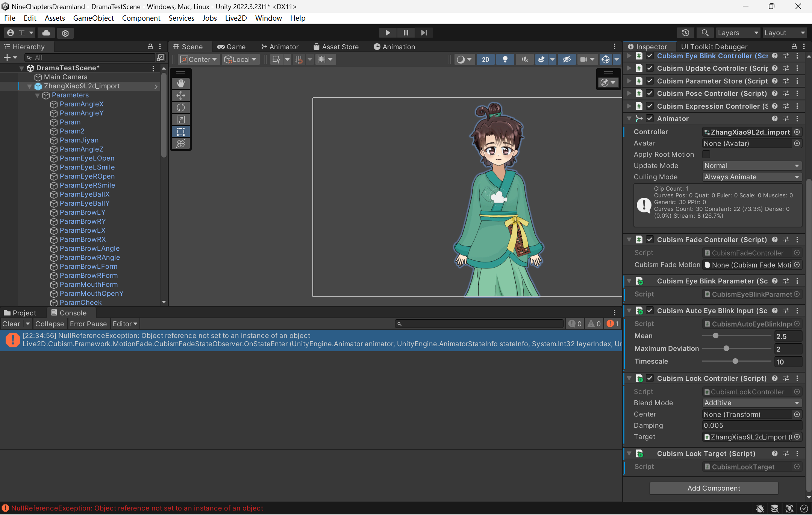
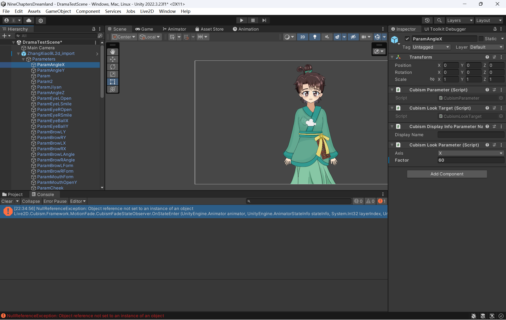
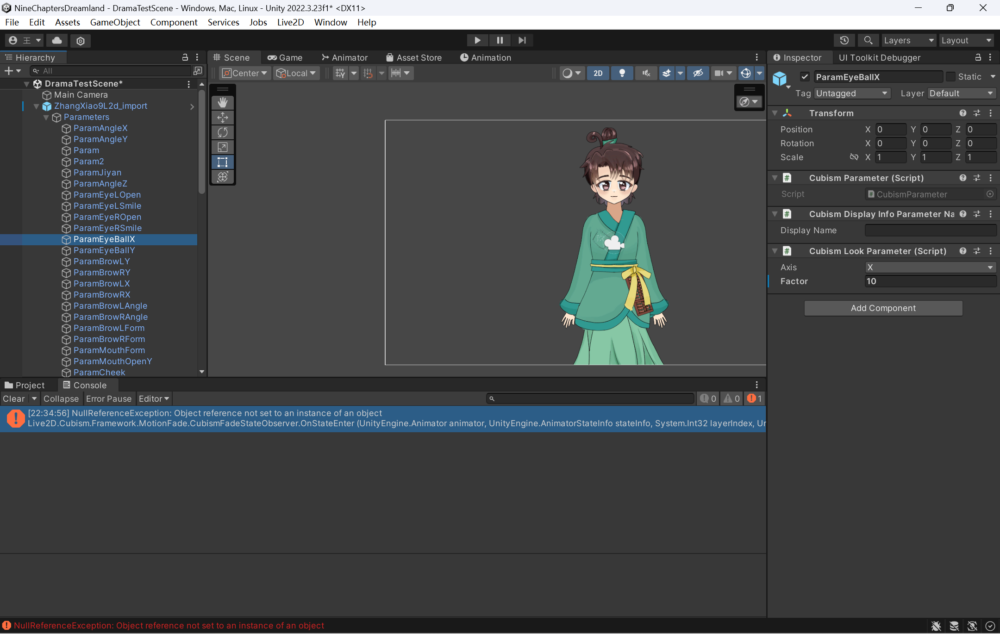
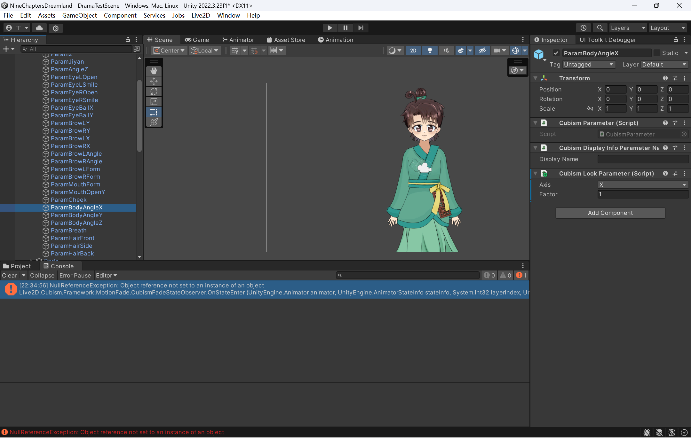
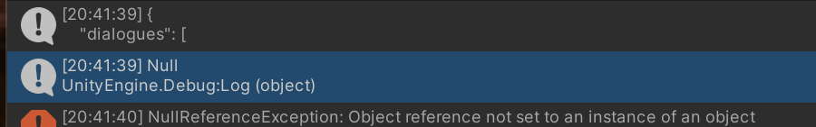

《九章绮梦》游戏初开发日记（一）
写在前面：
我的第一次游戏开发。这里是当年的记录，都是新手踩坑，确实没有什么技术含量。尽可能地保留原汁原味😂。
游戏名：九章绮梦
unity引擎版本：2022.3.23f1
注意：润色部分要在保证程序编完的情况下，再润色。
Unity调用命令行，另开新的一篇写。
程序开发备忘录
开始任务
- 导入图片（重要）
像素素材，为了防止像素模糊，一定要勾选这两项：
Filter Mode: Point(No filter)
Compression: None 润色：第一章还没有做速度控制器。主速度变量在PlayerController。要更改MoveLandscape和SceneScroller已完成- 重要：主摄像头，要固定下来，现在比例不对！据说要用GUI什么的。
- 场景滚动，是用我建立的滚动材料Scroller.mat，再加上滚动脚本即可。注意图片素材模式要是multiple，不能是simple。
- panel（暂停后的UI）还没做。先写逻辑，这里估计要放点儿知识文字。
- 美术缺很多素材！
- 音频准备了一点点，最后可能还要收集，去找免版权的，我买了一点。
- 润色：加一个跑步公里数。古代单位估计得。
- 重要：游戏玩法设计、存档系统。使用json还是……还有一个剧情系统。剧情估计要用json存，但是在脚本存也可以吧。
捡到金币的音频已经找到了，还没绑定。还有跳跃的音频还没找到合适的。- 说明：tree绑定了随风摇动的shader。
- 说明：看剧本，想一下如何融入数学元素。
- 润色：live2D系统，chatGLM调用。
未修正：角色和场景速度不对2023/4/6已写速度
2024/4/6
- 学到了oop里的“单例”用法。虽然还没用。
2024/4/11
L要做的部分
- 看懂已经写的ButtonPause.cs,MoveLandscape.cs,PlayerController.cs,RandomObject.cs,SpeedController.cs,SceneScroller.cs,TextCoin.cs仿照FangTianScence.unity，做后面的场景：SuMi粟米，Junshu均输，GouGu勾股。其中勾股部分是用屋顶素材拼的，和其它关不一样，经常跳跃。在PlayerController.cs中仿照金币写一个被敌人碰扣血的函数。后面可能要做一个主人公发起攻击的。
- 看上面的记录内容。
- 收集物品的脚本。
- 做一个存档脚本，存下关卡通关情况，每一关的最高纪录、人物金币收集情况、人物“知识点”。
- 准备做UI。网上能找到代码怎么写。
未来一周规划
程序
- 把剧情写进脚本，不用json了，直接用list数据结构包一个class。一个一个读取。然而为了美好的未来，我还是用了json()
美术
- 画几张聊天背景图，好，就拍照再加滤镜！
- 主页图，经费充足的话用live2d吗？
- 地图，这个重要捏
- 商店
- 像素风：第一关要收集的四个物品，第二关收集的米袋，第四关飞镖。一个暂停界面，只需要个框！最好和按钮一个色卡
unity live2d使用笔记
建模过程踩的坑不用提了，因为我忘记记录了
目线跟踪、眨眼、动画播放要挂载的脚本

其中脸部参数可以再调大一点



这个系列：Unity制作Live2D（三）头部眼睛跟随鼠标
总之要把动画全部k帧k出来再导入。2024/4/12
关于JSON
感觉难用，但是就这样吧。
在老C那儿查到这些避雷的地方： - 用于接收的JSON实体类需要声明[Serializable] 序列化。
- 使用Unity自带方法时，实体类如果是属性成员（public bool has_more{get;set;}）的话，在序列化的时候会缺失这些成员，导致解析不出来。将属性改为字段即可。
- 如果解析的对象是数组，自带的不能成功解析，可以人为将其封装为JSON对象。 对！数组xx的不能不能解析！（愤怒）根本改不好！！！
但是改着改着它就从这样变成了这样
我不理解，完全忘记自己改了什么，并且大受震撼。。。unity我的祖宗，你编译快一点儿
所以这个有什么用来着？2024/4/15补充：1
{get;set;}
于是莫名其妙的，我们就可以SetTrigger播放人物动画了，好耶！1
2
3
4
5
6
7
8
9
10
11
12
13
14
15
16
17
18
19
20
21
22
23
24某个人工智能“主动”跟我说：
In C
get: This part defines the getter for the property. It allows you to retrieve the value of the property. When you access the property, the code inside the get block is executed, and the result is returned.
set: This part defines the setter for the property. It allows you to assign a value to the property. When you assign a value to the property, the code inside the set block is executed, and the value is stored.
Here’s an example of how you might use this syntax to create a simple property in C
;
public class Person
{
// Private field to store the value
private string _name;
// Property with getter and setter
public string Name
{
get { return _name; }
set { _name = value; }
}
}
In this example:
The Name property has both a getter and a setter.
When you read person.Name, it calls the get block and returns the stored _name value.
When you assign a value to person.Name, it calls the set block and updates the _name field.
Feel free to adapt this pattern to your specific use case! 😊
顺便一提，不知道哪儿冲突了，小九的微笑眯眯眼和什么冲突了，悲()
假如此时，能来个很厉害的美工就太美妙了，再来亿点儿live2D模型吧！！2024/4/14
做了剧本一个字一个字播放关于c#的oop
我忘记我要记什么oop了。。。2024/4/15
- 摄像头比例是Camera.main.aspect。但我还是搞不好啊！
- 重新测试了python chatglm角色ai聊天，写了unity和python通信的脚本。
为什么要用cmd.exe呢？因为太菜了，看到socket的代码望而生畏，觉得cmd比较好搞，遂学之。python那边就是用我们的老朋友sys了。
这里是用Thread类，网上说不用的话会报错。查了一下概念：
线程(Thread)是进程中一个单一的顺序控制流程。线程是进程中的实体。一个进程可以有多个线程，一个线程必须有一个父进程。2024/4/19
这几天都在画画。但这是程序开发备忘录。2024/4/20
- video的导入遇到了困难。还好格式转换解决了。（后面补充一下，还是不行，有bug）
- 添加了游戏知识卡，虽然丑丑的。
- 比例还是有问题。
- 找了画手朋友画了些东西。
2024/4/忘了
记得时间戳暂停了恢复回来啊喂！还有ai板块编译出来就寄了，以后要想办法解决！
程序心得记录
累死了，最后一天疯狂修bug，不写啦